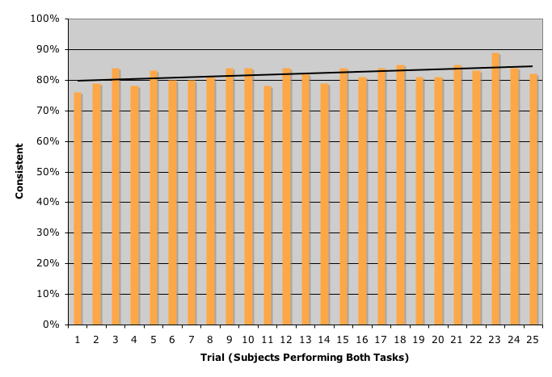

Revised 20 March 2007
The Semantic Web vision relies on authors creating disambiguated content, but the claim that they are willing and able to do so is in doubt. I addressed this doubt by conducting a pilot experiment on human satisfaction and efficacy in disambiguation tasks, with 47 subjects. I selected two "minimal" tasks, showing subjects ambiguous sentences--sentences with scopally ambiguous adverbial quantifiers, such as "almost always"--and asking them to select between representations of two alternative meanings of each sentence. One task was paraphrasal: Each representation was a paraphrase. The other task was truth-conditional: Each representation was a situation description. Each subject judged 25 sentences; half performed one of these tasks per sentence, and the other half performed both tasks on each sentence.
Average subjects spent about 25 seconds per sentence, achieved approximately 75% inter-task consistency, and became faster but not more consistent as they got practice. The paraphrasal task was somewhat more enjoyed and was performed faster than the truth-conditional task, but the most dramatic effect was an effect of presentation order on speed. Performance of two tasks per sentence was much faster when the paraphrasal task was first on the page than when the truth-conditional task was first. A dual task in the former order was almost as fast as a single truth-conditional task. The tasks also appear to have exerted some bias on responses: Subjects tended more to agree on a sentence's meaning if they performed the same task than if they performed different tasks on it. Subjects' comments exhibited a wide range of attitudes, from excited discovery to frustrated confusion, toward the tasks.
The results cast doubt on the doubt about human beings as disambiguators. Both paraphrasal and truth-conditional disambiguation appear to be viable, and perhaps efficiently combinable, methods. Further research can explore humans' trainability and incentivizability for disambiguation tasks and individual differences in task-type preferences and aptitudes.
In the envisioned Semantic Web (Berners-Lee 2001), typical users would not spend much time reading Web pages. They would mostly rely on machines to do so, and to answer the users' questions or take autonomous actions compatible with the users' interests. This efficiency might come at a price: The quality of the answers and decisions could be degraded if ambiguity continued to pervade the texts on the Web and if machines remained unable to match humans' expertise (Wasow 2005) in extracting intended meanings from ambiguous text. Moreover, although the world's languages can apparently express similar sets of meanings (Bittner 1995, Baker 1995), they do so with significantly diverse meaning-representation mechanisms (Partee 1995, Partee 2004 p 220, Petronio 1995, Vieira 1995, Faltz 1995). So, as the Web became more linguistically diverse, success in automatically disambiguating its content would presumably shrink further.
For example, when a Web health encyclopedia (NLM 2007) advises
(1) Avoid prolonged exposure to excessive heat and humidity
a machine might typically have more trouble than a person in assigning values to vaguely quantitative modifiers like "prolonged" and "excessive". A machine might be better than a person in detecting the lexical and structural ambiguities associated with "and", but unreliable in selecting the correct meanings out of all the candidates. As a practical consequence, some automated agents might tell their clients that they should avoid heat and also avoid humidity, while others were telling their clients that dry heat, and cold humidity, are safe.
To compensate for the limitations of automatic disambiguation, the Semantic Web vision assumes that the authors of the Web's content will benefit from making their works amenable to machine reasoning and will agree to incur some limited cost to do so. Such authors would presumably want to know which strategies of disambiguation work best. How well a strategy works would depend on how it works for authors, for developers of Semantic Web agents, for those whom the agents serve, and for those who read Web content directly.
I address here the interests of the first clientele: authors. I ask which strategies of disambiguation work best for them. Which ones can they most easily use, which ones take the least time to learn and use, and which ones deliver the most useful results? I adopt the working assumption that progress in automated disambiguation (Blanchon 1997, Chantree 2003, Ceccato 2004, Trujillo 1999 ch 9) will be slow enough to make it rational for authors to invest in human disambiguation, up to some limit.
There are several families of disambiguation strategies. The craft of "good" speech and writing, whether general or technical (O'Conner 1996, Berry 2003), is partly the craft of disambiguation. An extended variety of this craft is the practice of writing in controlled industrial languages (Pool 2006), containing lists of prohibitions aimed at preventing ambiguities of particular types. An extension of this practice accompanies it with interactive human-machine authorship, in which a machine performs real-time automated fault (including ambiguity) detection and interrogation (Bernth 2006) or, more assertively, guides the author through alternatives (Power 1999, Power 2004). In contrast with these uses of constrained natural languages, there are strategies relying on formal languages. The earliest ones typically formalized only the lexicon, aiming to eliminate lexical ambiguity (Maat 1999). Later projects typically reversed the emphasis, targeting structural ambiguity (Pietroski 2007, Zalta 2005, Fuchs 2006). The variety of this strategy most associated with the Semantic Web Initiative addresses both lexical and structural ambiguity (Noy 2001).
A common observation about all these strategic families, by those who teach them to users or analyze their use, is that people often fail--or refuse--to learn them and comply with them. This resistance may arise from the tendency of speakers and writers to be unaware of ambiguities in their own expressions or, if aware, to lack motivation to do anything about them (Arnold 2004). Where there is motivation, the task of analyzing one's intended meanings and the implications of various representations of those meanings may be beyond persons without expertise in knowledge engineering (Marshall 2003, Shirky 2003, Clark 2005). Strategies that rely on literal representation may be unintuitive, given the prevalence of metaphorical reasoning in human discourse (Lakoff 1992).
In light of these doubts, it makes sense to verify that people can perform minimal disambiguation tasks before investigating their efficacy in complex and demanding ones. A plausibly minimal task, I surmise, would have these properties:
Such a task could apply when an author enjoys the support of an intelligent agent that detects ambiguities and, when unable to select confidently the intended analysis, presents a disambiguating stimulus in the natural language to the author. This would be an automated agent's analogue to human readers' questions like "Wait, I didn't quite understand. Should I avoid heat and also avoid humidity, or avoid only hot, humid conditions?"
I report here an experiment in which subjects were asked to perform such minimal disambiguation tasks. I compare two task types: paraphrasal selection (choosing between less ambiguous paraphrases of the original sentence) and truth-conditional selection (choosing between two situations representing alternative meanings of the sentence).
For example, if a subject were shown the sentence
(6) Killer bees are migrating from Brazil to Canada.
a paraphrasal selection task might be to choose between
(7) Individual killer bees are migrating from Brazil to Canada.
(8) The killer-bee population is migrating from Brazil to Canada.
and a truth-conditional selection task might be to choose between
(9) This bee was born near Rio de Janeiro, and now it lives near Vancouver.
(10) Ten years ago there were no killer bees north of the U.S.-Mexican border, and this year some have been found in Oklahoma.
There are numerous types of ambiguity (Bach 1998). The experiment confined the subjects' tasks to a single type, so that any progress in subjects' performance as they gained practice could be observed. I selected quantification ambiguity (Partee 1997), which has long been a focus of semantic research. Quantification ambiguities pose several issues, including these, where I have underlined the quantifiers in the examples:
This last subtype of quantification ambiguity, involving the scopes of adverbial quantifiers modifying sentential verbs, was the focus of the experiment. The majority of the expressions presented to subjects included the quantifier "almost always". It has alternative interpretations as a restriction on continuous time, on a set of events, and on the sets denoted by the verb's arguments. For example, in
(2) Dogs almost always chase cars.
"almost always" may be interpreted to describe "23 out of 24 hours a day", "9 out of every 10 times this could happen", "9 out of 10 dogs", or "9 out of 10 cars", as well as combinations of these. (I ignore other ambiguities, such as whether "dogs" and "cars" describe individuals or kinds, and what dogs and cars are in the relevant universe.) Thus, the sentence may mean that every dog chases almost all cars, almost all dogs chase all cars, or almost all dogs chase almost all cars, among other things. Facts about the world and the context of the sentence will affect the interpretation. Thus, grammatically parallel sentences, such as
(3) Students almost always order pizzas.
(4) Hammers almost always break windows.
(5) Rivers almost always carry pollutants.
may receive nonparallel interpretations.
Suppose authors needed to specify explicitly the interpretation they have in mind. Would they know what it is? If so, could they select it from the alternatives? If they could, how could they best do so? If we could reduce their task to an apparently minimal one of paraphrasal selection or truth-conditional selection, would they succeed, and would they find the results worth the effort?
Paraphrasal selection and truth-conditional selection, even if they select between equivalent pairs of meanings, might not be equally user-friendly. There is evidence that the way a problem is represented can make the difference between majority success and majority failure in reasoning tasks (Cosmides 1996). But it is not obvious which one of these tasks should be expected to work better. Paraphrasal tasks might be easier because paraphrasing is a common activity and requires no reasoning or mapping between facts and generalizations. Or truth-conditional selection tasks might be easier because they tell stories, and people are skilled at using stories to illustrate or contradict truth claims.
I conducted the experiment as an exploratory pilot study, with a deliberately limited number of subjects. My intent was to evaluate and improve the study instrument and discover relationships meriting further investigation on the basis of a test with a small set of users.
I created the experiment for administration on the Web. Subjects could use any Web browser to access and undergo the experiment, at a time of their choosing. The subject's browser needed to support forms and tables, but did not need to support frames, embedded scripting, animation, or applets, nor did subjects need to download any software. Subjects whose progress through the experiment was interrupted by a browser crash, a disconnection, or an inadvertent closing of the browser window could resume the experiment by reconnecting to the experiment's main page and providing a code that had been issued to them. I designed the experiment so that subjects could not change any action previously performed. Using the browser's "Back" button and resubmitting a form, for example, would elicit a page announcing that the wrong form had been submitted and asking the subject to resume the experiment (with the above-described resumption procedure). I used the Apache HTTP Server 2.0 and Perl 5.8 to create the experiment as a CGI application.
The user interface during the main part of the study is illustrated in Figure 1.
Figure 1. User Interface
Testing and inspection of the application are possible at http://utilika.org/re/aa/test.html. Copies of the software and data are available on request.
A total of 47 subjects completed the study, and another 23 subjects quit the study without completing it. I had publicized the experiment and stated a sole requirement that subjects be able to read and write English. I was unable to enforce this requirement, nor verify the truth of the answers given by subjects to questions about their characteristics. The experiment treated the subjects anonymously, not collecting names or other identifying information. Thus, in principle, some of the subjects may have been robots, the same person participating multiple times, or people randomly guessing without reading the instructions. Inspection of the data provides little basis for suspicion about such participants, however. For example, no completing subject's completion time was unrealistically fast; only 2 pairs of completing subjects connected from the same IP address; in only 4 cases was there a pair of completing and aborting subjects connecting from the same IP address; no subject submitted more than a small fraction of the pages without selecting an answer; and no subject's answers were identical over any large sequences of pages. Nonetheless, there is no basis in the design of this study to consider the subjects a random sample of any known population.
With the subject-provided data taken at face value, the subjects had the characteristics described in Tables 1-3.
Table 1. Subjects by Native Language
| English a Native Language? | Frequency |
|---|---|
| Yes | 74% |
| No | 26% |
| Count | 47 |
Table 2. Subjects by Best-Known English Variety
| Best-Known English Variety | Frequency |
|---|---|
| United States | 81% |
| Canada | 2% |
| Australia | 0% |
| United Kingdom, India, Other | 17% |
| Count | 47 |
Table 3. Subjects by Age
| Age Range (Years) | Frequency |
|---|---|
| 0-19 | 4% |
| 20-39 | 64% |
| 40-59 | 26% |
| 60- | 6% |
| Count | 47 |
It is a reasonable question whether the task in this experiment relied on native-speaker intuitions and, if so, to what degree. My analysis does not differentiate between native-English-speaking and other subjects, nor among subjects on the basis of their best-known variety. (UK, Indian, and other English varieties were to be distinguished, but were erroneously coded alike.)
As part of the publicity and motivation for participation in the experiment, the invitation to participate stated that the first 20 subjects completing the experiment and registering their completion with the Web-based service-contracting service Amazon Mechanical Turk (Amazon 2007) would receive a nominal fee and be eligible for a bonus of $10.00 to be paid to whichever subject provided what I judged to be the most useful comments. The nominal fee was $0.40. Of the completing subjects, 19 registered their completion with Amazon Mechanical Turk and were compensated, 1 registered unverifiably and was not compensated, and the other 27 participated without compensation.
I conducted the study during a 61-hour period, 10-13 March 2007.
Subjects read an introductory page describing the topic and my motivation, then a page describing the terms of participation, and then an introduction asking subjects to assign one of two interpretations to a particular sentence. They were then informed that I considered the sample sentence ambiguous and that different people would naturally interpret it in various ways. They were told that in the following task they would answer questions about the apparently intended meanings of sentences, and in answering the questions they could use the sentences, their knowledge, their beliefs, and their experiences.
After this introduction, subjects received a succession of 25 sentences, each accompanied by 1 or 2 questions and, on some trials, a questionnaire about their feelings toward the study. After the last trial, subjects received a questionnaire asking for a few facts about themselves, namely those summarized above, and then received an acknowledgement page thanking them.
On each of the 25 trials, and as part of the questionnaire, subjects were invited to add any comments in a text area.
Of the 25 sentences, 16 contained "almost always" used as a sententially adverbial modifier, and 5 contained "nearly always" used in the same way. The other 4 sentences contained other adverbial quantifiers, namely "usually", "mostly", "almost never", and "only". I intended this distribution to provide a focus on "almost always" and an apparently synonymous "nearly always", to preview responses to a few other adverbial quantifiers, and to give enough variety to the subjects to adequately limit tedium.
My choice of positive polarity was based in part on the greater practical impact of positive-polarity ambiguity with universal and near-universal quantification. The interpretations of an almost-always sentence can differ in ways that make a major practical difference, but the interpretations of an almost-never sentence cannot (except with extreme disparities in set sizes). For example, the sentence (Liu 1994)
(11) Use of marijuana almost always precedes other drug use.
interpreted with the quantifier having scope over the subject ("Almost all use of marijuana precedes other drug use") says that marijuana smokers are almost destined to use other drugs, while if the quantifier has scope over the complement ("Use of marijuana precedes almost all other drug use") it does not say that. By contrast,
(12) Coin collecting almost never precedes counterfeiting.
says that a coin collector is almost immunized against becoming a counterfeiter, regardless of whether "almost never" has subject or complement scope.
For each sentence, I created 2 paraphrases and 2 truth conditions. I yoked them, so that in my judgment each paraphrase had a corresponding truth condition, and each paraphrase/truth-condition pair was distinct in meaning from the other paraphrase/truth-condition pair. In all cases, the truth conditions were verbal descriptions that included numbers, such as "I did 20 things yesterday, and he complained about 18 of them." I performed no external validation on my paraphrases, truth conditions, or pairings.
For example, the sentence
(13) Drinking almost always followed a dinner-party.
had the paraphrasal alternatives
(14) Almost all drinking followed dinner-parties.
(15) Drinking followed almost all dinner-parties.
and the truth-conditional alternatives
(16) In the activity diaries, 1000 episodes of drinking were reported, and 975 of them followed dinner-parties.
(17) In the activity diaries, 1000 dinner-parties were reported, and drinking followed 975 of them.
Each subject, on beginning the experiment, was randomly assigned to one of 4 treatment groups:
Thus, subjects in groups 0 and 1 performed 25 selections each, and those in groups 2 and 3 performed 50 selections each.
The order of the stimulus sentences was randomized for each subject.
The 2 alternative responses for each task were displayed in a random order. This implies that subjects in groups 2 and 3 might see the corresponding paraphrasal and truth-conditional responses in the same position or in opposite positions within their pairs.
Subjects performing paraphrasal selection were asked "Which of the following sentences better expresses what you think the writer meant?". Subjects performing a truth-conditional selection were asked "Which of the following situations better illustrates what you think the writer meant?".
The questionnaire about the subjects' feelings toward the study was administered on every 5th trial. For subjects in groups 0 and 1, this implies that each administration took place at the end of a block of 5 same-task trials. There was 1 question in this questionnaire, asking the subjects to describe their current feelings about the study on 3 dimensions, with 5 ordinal alternatives per dimension:
| Boring | o o o o o | Interesting |
| Hard | o o o o o | Easy |
| Useless | o o o o o | Useful |
I shall now describe my expected results and the actual results. Since this was a pilot study with a nonrepresentative convenience sample, I shall mostly avoid descriptions of statistical significance levels. In light of the small counts involved, I also have not analyzed the differences between the "almost always", "nearly always", and other sentences. Instances in which a subjects did not supply a response are omitted from the data presented below.
Although the paraphrasal task and the truth-conditional task both have advantages for user-friendliness, I expected the subjects on average to prefer the paraphrasal task, given the numeric reasoning required by the truth-conditional task. So, I predicted that the mean of the easy-difficult judgments of subjects in groups 0 and 1 at the end of each 5-trial paraphrasal batch would be substantially (at least 1 position) closer to the "easy" end than at the end of each truth-conditional batch. I made no prediction as to whether subjects in groups 2 and 3, those with both tasks to perform, would rate the study easier or more difficult than subjects in groups 1 and 2, those performing only 1 task. Having both tasks on the same page might help subjects gain confidence through bimodal reasoning; or it might worry them about internal consistency and make them feel more heavily worked.
The results point in the predicted direction, but the difference is only about one-third of the minimum predicted magnitude: a mean score of 2.6 versus 2.3 on a scale ranging from 0 (difficult) to 4 (easy). This and the related results for the other feeling dimensions and the other groups are shown in Table 4. The range of scores on no item exceeds 0.6 out of a possible 4.
Table 4. Feelings about the Study by Task
| Treatment Condition | ||||||
|---|---|---|---|---|---|---|
| Para | Truth | Para Truth | Truth Para | All | ||
| Mean Feelings about the Study (0 = least, 4 = most) | Interesting | 2.9 | 2.7 | 2.3 | 2.5 | 2.6 |
| Easy | 2.6 | 2.3 | 2.4 | 2.1 | 2.4 | |
| Useful | 3.0 | 2.9 | 2.4 | 2.4 | 2.7 | |
We have, in addition, a behavioral measure of subjects' satisfaction with the study: whether they completed it or quit prematurely. If my hypothesis was well-founded, those performing truth-conditional selection would be more likely to quit than those performing paraphrasal selection. Suppose quitting is based on task(s) just performed or the impending task(s) just presented to the subject--what we can call the triggering task(s). Then quitters with a solely truth-conditional triggering task would be expected to be more numerous than quitters with a solely paraphrasal triggering task. This is true, but, as above, the difference is not interestingly great, as seen in Table 5. The overrepresentation of those with a dual triggering task is substantial and appears worth further attention. This could, of course, reflect a greater tendency for those who must perform 50 selections than for those who must perform 25 selections to decide that the study is too much work to justify completion.
Table 5. Quittings by Triggering Task(s)
| Triggering Task(s) | |||||
|---|---|---|---|---|---|
| Para | Truth | Para Truth | Truth Para | ||
| Trigger Type | Latest | 0 | 2 | 4 | 6 |
| Impending | 0 | 2 | 6 | 8 | |
Of the 23 who quit, 7 quit without having seen the first trial, so they were unaware of the task(s) they would have performed.
Subjects who performed both tasks on each trial chose one alternative from each pair. The pairs, as described above, were yoked, and I considered choices of the corresponding pair members to be consistent and choices of non-corresponding pair members to be inconsistent. Since the alternatives' orders were randomized, subjects could not learn to apply any ordering rule for consistency. If they wished to be consistent, they needed to examine the texts and decide which truth condition corresponded with which paraphrase. The only treatment condition that might affect their performance was the order of the tasks. Half the subjects performing both tasks saw the paraphrasal task above the truth-conditional task, and the other half saw them in the opposite order. But both tasks would both be visible together on most computer monitors, and subjects could perform and revise both of them, in either order, before submitting their decisions, so one might expect the order to have a minimal impact on performance. I predicted that subjects would tend to perform the first-position task first and that performing a paraphrasal task before a truth-conditional task would contribute marginally (about 10% of the range) to better performance, on the assumption that typical subjects could more easily retain in memory a paraphrase and apply that to analyzing a truth condition than vice-versa.
As shown in Table 6, the difference was about as small as I had predicted, but in the opposite direction. I had not made any prediction about absolute consistency levels, though, and the results show that 77% of all subjects performing both tasks on each trial performed them consistently.
Table 6. Consistency by Task Presentation Order
| Task Presentation Order, Subjects Performing Both Tasks Simultaneously (Trials) | ||||
|---|---|---|---|---|
| Para Truth | Truth Para | Total | ||
| Consistent | 73% | 81% | 77% | |
| Inconsistent | 27% | 19% | 23% | |
| Count | 271 | 214 | 485 | |
Whatever the consistency of subjects might be, I predicted that it would tend to increase during the course of the study. Subjects would learn to perform more consistently with experience. As Figure 2 shows, they did not. The best-fitting (total-squared-deviation-minimizing) straight line, shown in the figure, shows practically no change.

Figure 2. Consistency by Trial
Here I have treated consistency as if it were a type of objective performance, with more consistency being better performance. One could argue against this assumption. If subjects began each dual-task trial by adopting a belief about the sentence's intended meaning and then tried to apply that belief to both tasks, consistency would be a reasonable measure of performance. But perhaps, instead, subjects did something else, such as ask themselves, task by task, which alternative the author would more likely accept. Then it would be inappropriate to consider 77% of the tasks correctly and the other 23% deficiently performed. If, however, the subjects actually aimed to be consistent, the results suggest that 25 iterations of a selection task, with no tutorial content or discussion, doesn't produce noticeable learning.
Not surprisingly, I predicted that subjects performing 2 tasks per trial would tend to work more slowly than subjects performing 1 task per trial. Consistent with my prediction above about the comparative difficulty of the tasks, I also predicted that subjects performing only paraphrasal selection in a trial would tend to complete the trial faster than subjects performing only truth-conditional selection. My estimate of the magnitudes were a 50% greater time for 2 tasks than 1, and a 20% greater time for truth-conditional selection than for paraphrasal selection.
The results, shown in Table 7, partly confirm these predictions. The 2-task trials were completed in a median of 36 seconds, 64% more slowly than the 22 seconds of the 1-task trials. And the median duration of a trial with only truth-conditional selection was 27 seconds, 42% more than the 19-second median duration of a trial with only paraphrasal selection. Both differences were in the predicted direction and somewhat stronger than predicted.
Table 7. Trial Duration by Treatment Condition
| Task(s) Performed in Trial | ||||||
|---|---|---|---|---|---|---|
| Para | Truth | All 1-Task | Para Truth | Truth Para | All 2-Task | |
| Median Duration | 19 | 27 | 22 | 29 | 48 | 36 |
| Mean Duration | 29 | 41 | 35 | 38 | 67 | 51 |
| Trial Count | 340 | 335 | 675 | 275 | 225 | 500 |
I had no reason to expect 2-task trials to differ in duration depending on the presentation order of the tasks, but they did. The median trial having truth-conditional selection above paraphrasal selection took 48 seconds, while the median trial with the opposite order took only 29 seconds, 60% as long, about the same as the median trial with only truth-conditional selection. A replicatable difference of this kind would be paradoxical. It would indicate that truth-conditional selection is so greatly facilitated by prior paraphrasal selection that the time spent on paraphrasal selection is compensated by time saved in truth-conditional selection. It would also indicate that people generally solve problems in the order they appear on a page, even if they are free to solve them in any order they wish and it greatly speeds their work to reverse the order.
To get an intuitive idea of the likelihood of this last finding being replicated, suppose that the 20 subjects who were assigned 2 tasks per trial had not suffered depletion from withdrawals, and had been drawn from a population which, in both conditions, would have exhibited normal distributions and equal variances of trial durations. Then a difference (regardless of direction) at least as great as the observed 38-to-67-second difference in their means would occur in fewer than 5% of the samples (t = 2.14, DF = 18, N1 = 11, N2 = 9, M1 = 38, M2 = 67, s12 = 256, s22 = 1707). So, we can expect to find this effect again in a larger sample. The assumptions required for the statistical test are not realistic: The lower bound on duration prevents normality, and in these samples the subjects who saw the truth-conditional task on top exhibited a much greater variance than the opposite-order subjects. Such assumption violations tend to have small effects, however (Hays 1973, pp. 409-410).
As with consistency, I predicted that subjects would learn to solve the problems faster with experience. Unlike with consistency, the results agreed with this prediction, as Figure 3 shows. According to the best-fitting (total-squared-deviation-minimizing) straight line shown in the figure, the median trial duration decreased from 33 seconds to 22 seconds over the 25 trials. Of the 47 subjects, 40 became faster and 7 became slower over time, measured with the same method applied to each individual's sequence of trial durations. Statistically (according to the cumulative binomial distribution), this is a highly significant difference. If samples of this size, 47, were drawn from a population in which only half would have exhibited speed increases, fewer than 1 in 10,000 samples would contain 40 or more speed-increasing subjects.

Figure 3. Median Duration by Trial
It would be reasonable to expect subjects who failed to complete the experiment to have been slower task performers than completing subjects, for two reasons. First, those who needed more time would find participation more costly. Second, quitters' trials were, on average, earlier in the experiment than completers' trials, and earlier trials tended to take longer. The results were mostly but not entirely consistent with this expectation. The one-half of the quitting subjects that performed 2 tasks with truth-conditional selection on top had a median task duration of 41 seconds, less than completing subjects' 48 seconds in this condition. But the other half of the quitting subjects had median task durations substantially longer than completing subjects: 33 (versus 19), 43 (versus 27), and 40 (versus 29) seconds, on paraphrasal, truth-conditional, and paraphrasal-above-truth-conditional trials, respectively. So, there is not a uniform pattern of those who need more time to perform the tasks being more likely to quit the experiment.
The subjective response, objective performance, and speed, in combination, suggest that subjects typically take the time they need in order to achieve an approximately uniform result under whatever conditions they work under. As the task becomes easier or more difficult, subjects compensate by working faster or more slowly, rather than by getting better or worse results. If this pattern were to be robust, it would pose a challenge. What could one do if one wanted to elevate the quality of the results, such as making those doing the work more satisfied and getting them to achieve greater consistency? Solutions affecting individual results could involve motivations, such as compensation, incentives, and goal redefinition. Solutions not affecting individual results could include applying multiple performers to each task (if the disambiguators were readers rather than authors). Solutions combining these approaches could include redefining the task as a game, with a goal of reaching agreement on meanings with other individuals (cf. von Ahn 2004).
In judging ambiguous sentences, people might be swayed by the form that the task takes. Those who do paraphrasal selection might tend to perceive one meaning, while those doing truth-conditional selection perceive another. I expected this to be true. I had no hypothesis that would predict a particular kind of bias, nor a semantic model covering all the stimulus sentences that would allow me to apply such a hypothesis to each sentence to predict a sentence-specific bias. But I did make a rougher prediction. I expected pairs of subjects to agree more often with each other on the meaning of a sentence when they performed the identical task on that sentence than when they performed the opposite tasks on it. I limited this prediction to subjects performing 1 task per trial. I expected task difference to impair agreement by about 10%. As Table 8 shows, of all pairs of 1-task subjects performing the identical task on the same sentence, 68% expressed agreement, versus 58% when the subjects performed opposite tasks. This confirms my prediction, more strongly than I expected.
Table 8. Agreement by Task Identity
| Tasks Identical or Opposite between Pairs of 1-Task Subjects Judging Same Sentence | ||||
|---|---|---|---|---|
| Identical | Opposite | Total | ||
| Agreeing | 68% | 58% | 62% | |
| Disagreeing | 32% | 42% | 38% | |
| Pair Count | 2720 | 2950 | 5670 | |
To get some insight into the bias that the form of the task might introduce, we can consider the sentence that exhibited the greatest difference in judgments between tasks. This was sentence 22, "Success usually comes to those who are too busy to be looking for it." Its paraphrasal alternatives were:
Of the 17 subjects performing only this task on the sentence, 88% chose alternative 1. The truth-conditional alternatives were:
By contrast, only 40% of the 10 subjects performing only this task chose alternative 1.
I speculate that the more likely meaning intended by an utterer of this sentence is the meaning in which the subject is the quantifier's scope, expressed by alternatives 1. It would follow that the paraphrasal task here captured appropriate intuitions, but the truth-conditional task defeated those intuitions. Perhaps it did so by referring to the causal variable after the affected variable, opposite to an expectation that cause precedes effect. If this is correct, then the paraphrasal or truth-conditional form taken by a task may be only one influence on the quality of semantic judgment, and the way in which the alternatives are formulated within their type may be another.
Some subjects commented on this sentence. The comments received on it were:
Comment 2 reveals an ambiguity in the truth conditions that I had not anticipated. I understand "these" there as synonymous with "the latter", but this subject did not.
In 107 cases out of 1175 trials (9%), and in 12 more cases at the end of the study, subjects provided comments. Here is a selection of comments to show their range and quality:
The willingness of some subjects to comment profusely provides valuable hints about their understandings of both the items and the user interface. For example, one subject indicated that the initial state of the task response, a checked radio button to the left of the box containing the alternatives and their radio buttons (see Figure 1), was ambiguous, possibly representing an indifference response rather than the absence of a response at all. I had labeled it "No answer" in a previous draft, but pretesting led me to believe that would encourage its use.
Comments by quitting subjects might elucidate their reasons. Only 1 such comment out of 58 trials (2%) was offered: "overly complicated, difficult to follow", from a subject who had performed 7 trials of truth-conditional above paraphrasal tasks. This is consistent with the tendency for this treatment condition to accompany the highest quitting rate and, among those who did not quit, to consume the most time.
The results presented above suggest that people without training and with about 10 minutes of practice can use paraphrasal and/or truth-conditional selection to disambiguate sentences in about 20-25 seconds per ambiguity, achieving approximately 75% consistency. If we imagine moderate training, incentives, or multiperson collaboration making the performance satisfactory, this speed is (per person) roughly equivalent to 1600 words per hour, which is about six times as fast as typical human translation (PROZ 2006). This estimate suggests that some investment in human disambiguation could indeed be rational if it produced machine-processable expressions of meaning.
It appears that paraphrasal selection is typically less time-consuming than truth-conditional selection and, surprisingly, that the former, if it precedes the latter, may dramatically increase the latter's speed. This possible preparatory effect merits investigation. It seems inconsistent with the fact that the same task order accompanied almost as many abandonments of participation as the opposite task order. Neither task type was markedly superior to the other in subject acceptance or performance, so their further comparison seems warranted, particularly since each type seems to induce some bias in judgments. Diagnostics might be found predicting which type works better for which individuals.
As people repeatedly disambiguated sentences, they became more efficient, but the quality of their disambiguations did not tend to increase. Task difficulty was reflected mostly in higher rates of task abandonment and, among those who persisted, longer task-performance durations, which people adjusted as if to achieve uniform degrees of satisfaction and output quality. Thus, a topic for future study is what interventions (incentives, training, etc.) can induce subjects to achieve not only greater speed, but also increasing consistency, with experience.
Consistency rather than objective correctness was the main measure of performance in this experiment, because sentences were presented in isolation, leaving multiple interpretations plausible. Future experiments could vary the amount of accompanying sentential context and, with adequate context, could treat some answers as correct and others as incorrect.
A fundamental distinction between the tasks performed in this experiment and the real-world tasks motivating the research is that subjects in the experiment were acting as readers rather than authors. Subjects needed to guess what sentences mean instead of knowing the meanings that they, the subjects, wanted to express. It is plausible that the experimental tasks were more difficult than real-world author-disambiguation tasks because of this knowledge gap, although it cannot be assumed that authors always have unambiguous meanings in mind. Future research could compare these kinds of disambiguation, especially since disambiguation by readers, like abstracting and indexing by persons other than authors, is also a real-world task. Such research would need to confront the problem of discovering what meanings authors wish to express and how they express those meanings, without using the latter as a proxy for the former. Or, if the technique is putting subjects into situations where they have only one plausible meaning to express, the research would need to avoid putting the words into subjects' mouths as the means by which to motivate them to express that meaning. Such experiments have been conducted on collaborative task performance, using spatial problem-solving or puzzle tasks (e.g., Gergle 2006), but extending this paradigm to the range of meanings characteristic of the Web would be a challenge.
The discoveries I describe here are qualified by the small, nonrandom, and unverified characteristics of the subjects in this pilot study. Moreover, there are two other possible contaminants worth mentioning. One is differential attrition. Subjects were randomly assigned to treatment groups, but then each subject decided whether to complete the study or quit early. Subjects in 2-task treatment groups quit more often than subjects in 1-task treatment groups. Perhaps a difficult task induces the least skilled subjects to quit (in frustration), and an easy task induces the most skilled subjects to quit (in boredom). If so, the randomization of treatment assignments may not guarantee the statistical independence of subject characteristics from treatments, no matter how large and representative the sample becomes. The other contaminant is the numbers that I chose to use in formulating the truth conditions. Subjects presumably paid some attention to the realism of those numbers as they chose between the alternatives, and there is presumably no way to choose neutral numbers for such situation descriptions. The arbitrariness of numeric truth conditions may be an inescapable problem, whether they are formulated by persons or generated by algorithms.
Amazon 2007. Amazon.com, "Amazon Mechanical Turk" (Web site), 2007; http://www.mturk.com/mturk/welcome.
Arnold 2004. Jennifer E. Arnold, Thomas Wasow, Ash Asudeh, and Peter Alrenga, "Avoiding Attachment Ambiguities: The Role of Constituent Ordering", Journal of Memory and Language, 51, 2004, 55-70; http://www-csli.stanford.edu/~wasow/AWAA_final.pdf.
Bach 1998. Kent Bach, "Ambiguity", Routledge Encyclopedia of Philosophy (London: Routledge, 1998); Bach, 1998.
Baker 1995. Mark C. Baker, "On the Absence of Certain Quantifiers in Mohawk", ch. 2 in Quantification in Natural Languages, ed. E. Bach et al. (Amsterdam: Kluwer Academic Publishers, 1995), pp. 21-56.
Ben-Yami 2004. Hanoch Ben-Yami, Logic & Natural Language: On Plural Reference and its Semantic and Logical Significance (London: Ashgate, 2004).
Berners-Lee 2001. Tim Berners-Lee, James Hendler, and Ora Lassila, "The Semantic Web", Scientific American, 284(5), 2001, 34-43; http://www.scientificamerican.com/article.cfm?articleID=00048144-10D2-1C70-84A9809EC588EF21&catID=2
Bernth 2006. Arendse Bernth, "EasyEnglishAnalyzer: Taking Controlled Language from Sentence to Discourse Level", CLAW 2006, 2006; http://www.mt-archive.info/CLAW-2006-Bernth.pdf.
Bittner 1995. Maria Bittner, "Quantification in Eskimo: A Challenge for Compositional Semantics", ch. 3 in Quantification in Natural Languages, ed. E. Bach et al. (Amsterdam: Kluwer Academic Publishers, 1995), pp. 59-80.
Daniel M. Berry, Erik Kamsties, and Michael M. Krieger, "From Contract Drafting to Software Specification: Linguistic Sources of Ambiguity--A Handbook", manuscript, 2003; http://se.uwaterloo.ca/~dberry/handbook/ambiguityHandbook.pdf.
Blanchon 1997. Hervé Blanchon, "Interactive Disambiguation of Natural Language Input: A Methodology and Two Implementations for French and English", IJCAI 97, 1997; http://www-clips.imag.fr/geta/User/herve.blanchon/Docs/IJCAI-97.pdf.
Ceccato 2004. Mariano Ceccato, Nadzeya Kiyavitskaya, Nicola Zeni, Luisa Mich, and Daniel M. Berry, "Ambiguity Identification and Measurement in Natural Language Texts", University of Trento, Department of Information and Communication Technology, Technical Report DIT-04-111, 2004; http://eprints.biblio.unitn.it/archive/00000727/01/Report_v26_DIT_04_111.pdf.
Chantree 2003. Francis Chantree, "Ambiguity Management in Natural Language Generation", manuscript, 2003; http://www.cs.bham.ac.uk/~mgl/cluk/papers/chantree.pdf.
Clark 2005. Peter Clark, Phil Harrison, Tom Jenkins, John Thompson, and Rick Wojcik, "Acquiring and Using World Knowledge Using a Restricted Subset of English", FLAIRS 2005, 2005; http://www.cs.utexas.edu/users/pclark/papers/flairs.pdf.
Copestake 2005. Ann Copestake et al., "Minimal Recursion Semantics: An Introduction", Research on Language and Computation, 3, 281-332, 2005; http://www.cl.cam.ac.uk/~aac10/papers/mrs.pdf.
Cosmides 1996. Leda Cosmides and John Tooby, "Are Humans Good Intuitive Statisticians after All? Rethinking Some Conclusions from the Literature on Judgment under Uncertainty", Cognition, 58, 1-73, 1996; http://www.linguistics.pomona.edu/LGCS121Spring2005/Reading/CosmidesTooby1996.pdf.
Egg 2001. Markus Egg et al., "The Constraint Language for Lambda Structures", Journal of Logic, Language and Information, 10, 457-485, 2001; http://scidok.sulb.uni-saarland.de/volltexte/2004/293/pdf/clls2000.pdf.
Evans 1995. Nick Evans, "A-Quantifiers and Scope in Mayali", ch. 8 in Quantification in Natural Languages, ed. E. Bach et al. (Amsterdam: Kluwer Academic Publishers, 1995), pp. 207-270.
Faltz 1995. Leonard M. Faltz, "Towards a Typology of Natural Logic", ch. 9 in Quantification in Natural Languages, ed. E. Bach et al. (Amsterdam: Kluwer Academic Publishers, 1995), pp. 271-319.
Fuchs 2006. Norbert E. Fuchs, Kaarel Kaljurand, and Gerold Schneider, "Attempto Controlled English Meets the Challenges of Knowledge Representation, Reasoning, Interoperability and User Interfaces", FLAIRS 2006, 2006; http://www.ifi.unizh.ch/attempto/publications/papers/FLAIRS0601FuchsN.pdf.
Gergle 2006. Darren Gergle et al., "The Impact of Delayed Visual Feedback on Collaborative Performance", CHI 2006, 2006; http://www.soc.northwestern.edu/dgergle/pdf/Gergle_CHI2006.pdf.
Hays 1973. William L. Hays, Statistics for the Social Sciences, Second Edition (New York: Holt, 1973).
Lakoff 1992. George Lakoff, "The Contemporary Theory of Metaphor", in Metaphor and Thought, 2nd edn., ed. Andrew Ortony (Cambridge: Cambridge University Press, 1992); http://www.ocf.berkeley.edu/~katclark/coganthrodecal/lakoff.pdf.
Liu 1994. Liang Y. Liu, "Executive Summary: 1994 Texas School Survey of Substance Use Among Students: Grades 4-6", 1994; http://www.tcada.state.tx.us/research/survey/grades4-6/1994/execsumm.html, 1994.
Maat 1999. Jaap Maat, Philosophical Languages in the Seventeenth Century: Dalgarno, Wilkins, Leibniz (Amsterdam: Institute for Logic, Language and Computation, Universiteit van Amsterdam, 1999).
Marshall 2003. Catherine C. Marshall and Frank M. Shipman, "Which Semantic Web?", Hypertext '03 Proceedings, 2003; http://www.csdl.tamu.edu/~marshall/ht03-sw-4.pdf.
NPR 2006. National Public Radio, news broadcast, 31 August 2006.
NLM 2007. United States National Library of Medicine and National Institutes of Health, "Itching", in Medical Encyclopedia (Web site), 2007; http://www.nlm.nih.gov/medlineplus/ency/article/003217.htm.
Noy 2001. Natalya F. Noy and Deborah L. McGuinness, "Ontology Development 101: A Guide to Creating Your First Ontology", Stanford Knowledge Systems Laboratory Technical Report KSL-01-05 and Stanford Medical Informatics Technical Report SMI-2001-0880, 2001; http://smi-web.stanford.edu/auslese/smi-web/reports/SMI-2001-0880.pdf.
O'Conner 1996. Patricia T. O'Conner, Woe is I: The Grammarphobe's Guide to Better English in Plain English (New York: Riverhead, 1996).
Partee 1984. Barbara H. Partee, "Compositionality", in Varieties of Formal Semantics, ed. F. Landman and F. Veltman (Dordrecht: Foris, 1984), pp. 281-311.
Partee 1995. Barbara H. Partee, "Quantificational Structures and Compositionality", ch. 16 in Quantification in Natural Languages, ed. E. Bach et al. (Amsterdam: Kluwer Academic Publishers, 1995), pp. 541-601.
Partee 1997. Barbara H. Partee with Herman L.W. Hendriks, "Montague Grammar", ch. 1 in Handbook of Logic and Language, ed. Johan van Benthem and Alice ter Meulen (Amsterdam: Elsevier Science, 1997), pp. 5-91.
Partee 2004. Barbara H. Partee, "Noun Phrase Interpretation and Type-Shifting Principles", ch. 10 in Studies in Discourse Representation Theory and the Theory of Generalized Quantifiers, ed. J. Groenendijk, D. de Jong, and M. Stokhof (Dordrecht: Foris, 1986), pp. 203-229.
Petronio 1995. Karen Petronio, "Bare Noun Phrases, Verbs and Quantification in ASL", ch. 17 in Quantification in Natural Languages, ed. E. Bach et al. (Amsterdam: Kluwer Academic Publishers, 1995), pp. 603-618.
Pietroski 2007. Paul Pietroski, "Logical Form", The Stanford Encyclopedia of Philosophy (Spring 2007 Edition), ed. Edward N. Zalta (Web site), 2007; http://plato.stanford.edu/archives/spr2007/entries/logical-form/.
Pool 2006. Jonathan Pool, "Can Controlled Languages Scale to the Web?", CLAW 2006,2006; http://turing.cs.washington.edu/papers/pool-clweb.pdf.
Power 1999. Richard Power, "Controlling Logical Scope in Text Generation", ENLG 1999, 1999; http://www.itri.brighton.ac.uk/~Richard.Power/ewnlg-drt.ps.
Power 2004. Richard Power and Roger Evans, "WYSIWYM with Wider Coverage", ACL 2004, 2004; http://www.itri.brighton.ac.uk/~Richard.Power/acl04.pdf.
PROZ 2006. PROZ: The Translators Workplace, "What Is the Realistic Translation Speed?" (Web discussion), 2006; http://www.proz.com/topic/40966.
Shirky 2003. Clay Shirky, "The Semantic Web, Syllogism, and Worldview", manuscript, 2003; http://www.shirky.com/writings/semantic_syllogism.html.
Trujillo 1999. Arturo Trujillo, Translation Engines: Techniques for Machine Translation (London: Springer, 1999).
Vieira 1995. Marcia Damaso Vieira, "The Expression of Quantificational Notions in Asurini do Trocará: Evidence Against the Universality of Determiner Quantification", ch. 20 in Quantification in Natural Languages, ed. E. Bach et al. (Amsterdam: Kluwer Academic Publishers, 1995), pp. 701-720.
von Ahn 2004. Luis von Ahn and Laura Dabbish, "Labeling Images with a Computer Game", CHI 2004, 2004; http://www.cs.cmu.edu/~biglou/ESP.pdf.
Wasow 2005. Thomas Wasow, Amy Perfors, and David Beaver, "The Puzzle of Ambiguity", in Morphology and the Web of Grammar: Essays in Memory of Steven G. Lapointe, ed. O. Orgun and P. Sells (Stanford: CSLI Publications, 2005); http://montague.stanford.edu/~dib/Publications/lapointe_paper_9-4.pdf.
Westerståhl 2005. Dag Westerståhl, "Generalized Quantifiers", The Stanford Encyclopedia of Philosophy (Winter 2005 Edition), ed. Edward N. Zalta (Web site), 2005; http://plato.stanford.edu/archives/win2005/entries/generalized-quantifiers/.
Zalta 2005. Edward N. Zalta, "Gottlob Frege", The Stanford Encyclopedia of Philosophy (Spring 2007 Edition), ed. Edward N. Zalta (Web site), 2005; http://plato.stanford.edu/archives/spr2007/entries/frege/.
I gratefully acknowledge valuable comments by Susan M. Colowick on previous versions of this report.